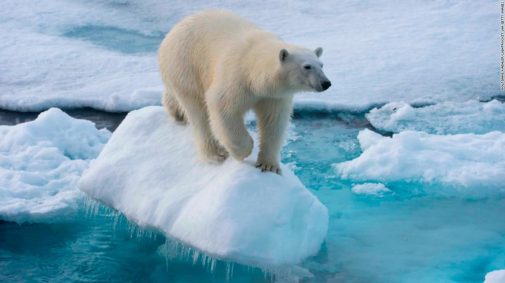
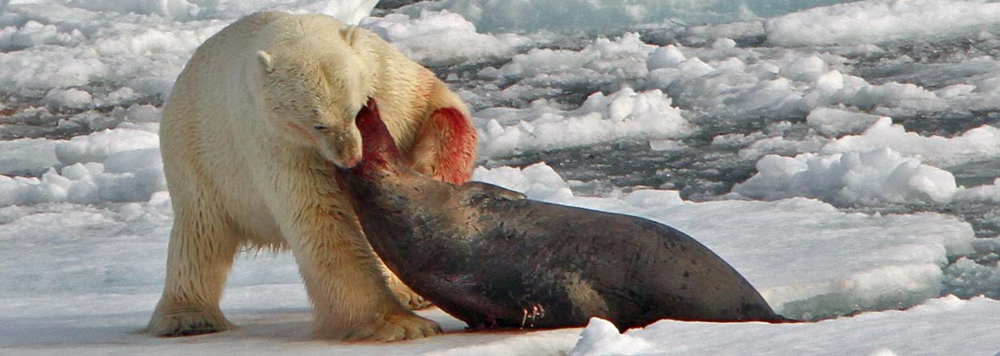
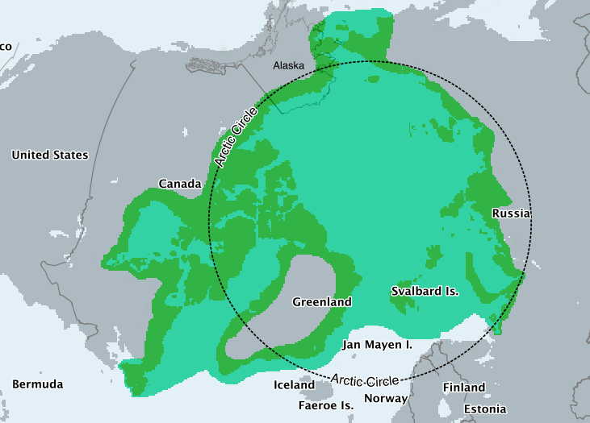
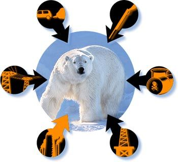

Click to hide!!
Click a button to choose what color you'd like this page to be:
The polar bear is the most carnivorous member of the bear family, and throughout most of its range, its diet primarily consists of ringed (Pusa hispida) and bearded seals (Erignathus barbatus).[87] The Arctic is home to millions of seals, which become prey when they surface in holes in the ice in order to breathe, or when they haul out on the ice to rest.[86][88] Polar bears hunt primarily at the interface between ice, water, and air; they only rarely catch seals on land or in open water.[89/p> 
Because of expected habitat loss caused by climate change, the polar bear is classified as a vulnerable species, and at least three of the nineteen polar bear subpopulations are currently in decline.[10] However, at least two of the nineteen subpopulations are currently increasing, while another six are considered stable.[11] For decades, large-scale hunting raised international concern for the future of the species, but populations rebounded after controls and quotas began to take effect.[12] For thousands of years, the polar bear has been a key figure in the material, spiritual, and cultural life of circumpolar peoples, and polar bears remain important in their cultures. Historically, the polar bear has also been known as the white bear.[13]
These are the threats that polar bears are currently facing
